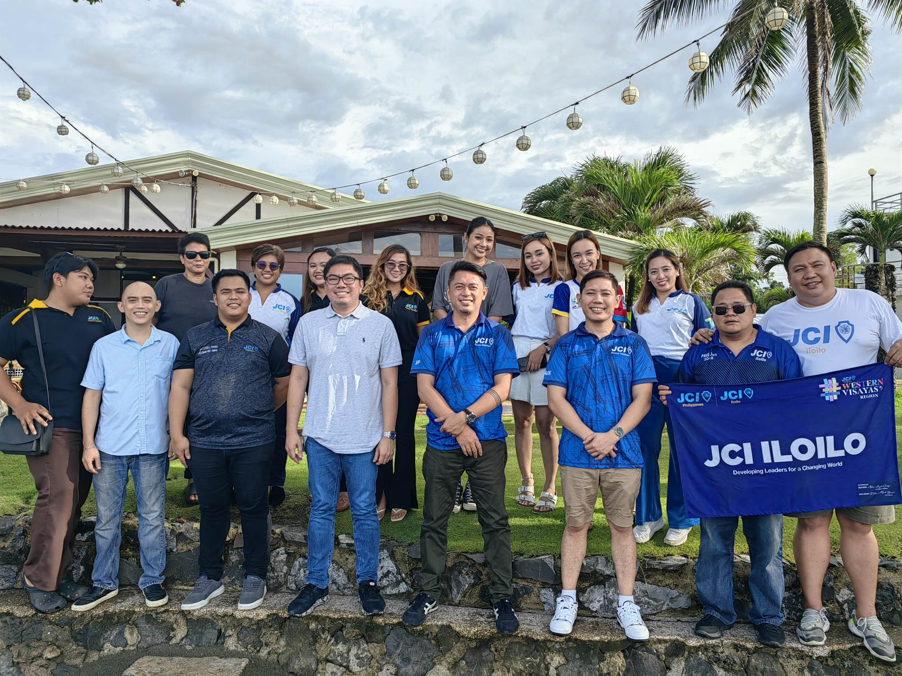

JCI Roxas
Halaran.
01About UsJCI Halaran
We are a Capiz-based JCI chapter
Connecting members worldwide through shared values and empowering them to create positive change and opportunities on a global scale.
01
Leadership Development
Training and hands-on activities to strengthen leadership skills.
02
Community Projects
We organize local projects to address community needs.
03
Global Outreach
We engage in global initiatives to learn and share best practices.
What is JCI Roxas Halaran
We are a Capiz based JCI chapter that connects its members through a worldwide network, uniting them through a shared set of core values laid out in the JCI Creed. JCI pushes its members to overcome challenges, create opportunity from adversity, and provide meaningful improvement at a global scale.
50+
Initiated local projects
2023
Operating and active since
The Philippine Jaycees, now JCI Philippines, is the first nationally organized leadership development organization in Asia. JCI Halaran is an emerging affiliate aimed at enforcing area-spanning schemes and connections for community development.



03 — Our Goal
Great leaders don't set out to be a leader… they set out to make a difference.
04StatsFun Facts
3+Years of activity
50+Successful projects
10+Helped communities
25+Members
Our mission is to connect, inspire, and empower young active citizens to create positive change in their communities and around the world.
Nominated Top 5 Best Local Organization Website
Temiong Awards
2024
Nominated Top 5 Most Outstanding Local Organization
Quadro Awards
2024
Star Local President — Lemuel Capa
JCI Philippines
2025
Star Local President — John Paul Sorongon
JCI Philippines
2024